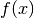
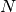
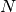
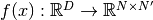

InhomogeneousInnerProduct¶
About the InhomogeneousInnerProduct class¶
The WaveBlocks Project
@author: R. Bourquin @copyright: Copyright (C) 2010, 2011, 2012, 2013, 2014 R. Bourquin @license: Modified BSD License
Inheritance diagram¶
Class documentation¶
- class WaveBlocksND.InhomogeneousInnerProduct(delegate=None)¶
- __init__(delegate=None)¶
This class computes the inhomogeneous inner product
 .
.Parameters: delegate (A Quadrature subclass instance.) – The delegate inner product.
- build_matrix(pacbra, packet=None, operator=None, eval_at_once=False)¶
Delegates the computation of the matrix elements
for a general function  with  .
The matrix is computed without including the coefficients
.
The matrix is computed without including the coefficients  .
.Parameters: - pacbra – The wavepacket
 from the bra with  components.
from the bra with  components. - packet – The wavepacket
 from the ket with components.
from the ket with components. - operator – A matrix-valued function .
- eval_at_once (Boolean, default is False.) – Flag to tell whether the operator supports the entry=(r,c) call syntax.
Returns: A matrix of size .
- pacbra – The wavepacket
- get_delegate()¶
Return the Quadrature subclass instance used for evaluation of this inner product.
Returns: The current instance of the quadrature.
- get_description()¶
Return a description of this inner product object. A description is a dict containing all key-value pairs necessary to reconstruct the current instance. A description never contains any data.
- quadrature(pacbra, packet=None, operator=None, summed=False, component=None, diag_component=None, diagonal=False, eval_at_once=False)¶
Delegates the evaluation of
for a general
function with .Parameters: - pacbra – The wavepacket from the bra with components.
- packet – The wavepacket from the ket with components.
- operator – A matrix-valued function .
- summed (Boolean, default is False.) – Whether to sum up the individual integrals .
- component – Request only the i-th component of the result. Remember that .
- diag_component – Request only the i-th component from the diagonal entries, here . Note that component takes precedence over diag_component if both are supplied. (Which is discouraged)
- diagonal – Only return the diagonal elements .
This is useful for diagonal operators
 .
. - eval_at_once (Boolean, default is False.) – Flag to tell whether the operator supports the entry=(r,c) call syntax.
Returns: The value of the braket
. This is either a scalar value or
a list of scalar elements depending on the value of summed.- pacbra – The wavepacket
- set_delegate(delegate)¶
Set the Quadrature subclass instance used for quadrature.
Parameters: delegate – The new Quadrature instance.